핵심 요약
MinkowskiCNN은 3D/4D perception 데이터에서 predefined sparse output coordinate에 대해서만 출력을 계산하고, 실제 존재하는 input neighbor만 모아 dense voxel grid의 낭비 없이 CNN 구조를 고차원 sparse signal에 적용한다.
MinkowskiCNN은 좌표가 존재하는 곳만 convolution하도록 sparse tensor와 kernel map을 정의해, dense voxel 낭비 없이 3D/4D semantic segmentation을 수행하게 만든다.
Generalized Sparse Convolution
dense convolution, sparse submanifold convolution, stride, dilation, arbitrary kernel shape를 하나의 식으로 통합.
Minkowski Engine
coordinate quantization, coordinate manager, kernel map, pooling, transposed convolution을 고차원 sparse tensor용으로 제공.
4D Spatio-temporal ConvNets
3D video를 sparse 4D signal로 보고, frame-wise aggregation 대신 convolution으로 temporal context를 직접 처리.
Hybrid Kernel / TS-CRF
4D cost를 줄이는 non-hypercubic kernel과 spatio-temporal consistency를 위한 7D trilateral stationary CRF 제안.
핵심은 단순히 “4D convolution을 했다”가 아니다. CNN layer가 존재하는 coordinate set 위에서만 연산하도록 시스템을 만든 덕분에, 기존 CNN architecture 아이디어를 sparse 3D/4D domain에 재사용할 수 있게 된 점이 중요하다.
dense grid first
구현은 직관적이지만 빈 3D 공간까지 계산해 memory와 compute 낭비가 큼.
point set first
dense voxel은 피하지만 CNN식 local weight sharing과 hierarchy를 그대로 쓰기 어려움.
sparse coordinate first
관측 coordinate만 유지하고 offset별 kernel map으로 convolution을 수행.
논문 상세 정리
이하에서는 배경지식, notation, 보조 유도까지 포함해 논문의 세부 내용을 살펴본다.
Problem: 3D video를 dense grid 없이 어떻게 처리할까
논문의 출발점은 3D/4D perception 데이터가 대부분 sparse하다는 사실이다. LiDAR scan, depth camera sequence, RGB-D reconstruction은 전체 voxel grid 중 일부 위치에만 관측값이 존재하므로, dense 3D/4D convolution을 그대로 적용하면 빈 공간까지 계산하게 된다.
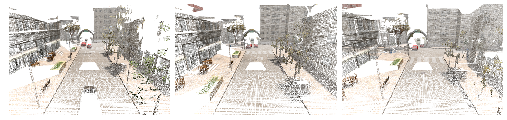
Introduction의 문제 제기는 “4D를 쓰고 싶지만 dense 방식은 너무 비싸고, 기존 3D 방법은 temporal structure를 직접 다루지 못한다”로 요약된다.
관측된 surface 주변에만 point가 있고 대부분의 voxel은 비어 있음.
차원이 올라갈수록 kernel 위치와 volume size가 급격히 증가.
3D video를 frame별로 처리하면 temporal consistency를 network 내부에서 직접 학습하기 어려움.
coordinate와 feature를 함께 저장하면 기존 CNN layer를 sparse domain으로 확장 가능.
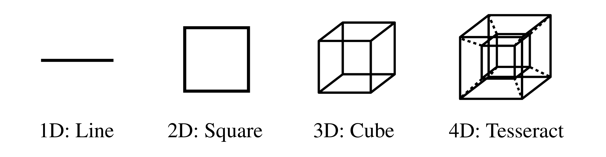
Related Work 맥락
Related Work는 논문이 왜 sparse tensor와 convolutional representation을 선택했는지 설명하는 배경이다.
| 계열 | 장점 | 논문이 보는 한계 |
|---|---|---|
| Dense voxel CNN | 3D grid 위에서 CNN을 직접 적용 | 대부분의 3D 공간이 비어 있어 memory/computation 비용이 큼 |
| Point-based network | point set을 직접 처리해 voxel 낭비를 줄임 | CNN의 local weight sharing과 계층적 architecture prior를 그대로 쓰기 어려움 |
| Sparse convolution | 관측 좌표만 처리 | 논문은 이를 임의 차원, arbitrary kernel, reusable coordinate map으로 일반화 |
| Early 4D perception | spatio-temporal data를 다룸 | homogeneous convolutional representation으로 깊은 4D network를 구성한 사례가 제한적 |
Mechanism: generalized sparse convolution이 무엇을 바꾸나
방법론의 핵심은 sparse tensor representation과 input/output coordinate set을 분리한 convolution 정의다. 이 덕분에 dense convolution, sparse submanifold convolution, strided convolution, transposed convolution, pooling을 같은 coordinate-map 기반 연산으로 다룰 수 있다.
논문은 coordinate matrix와 feature matrix를 함께 저장한다. 실제 4D video에서는 coordinate가 \((x,y,z,t)\)를 포함하고, batch 처리를 위해 batch index가 좌표에 추가된다.
논문은 먼저 dense convolution을 Eq. (2)로 두고, Eq. (3)에서 predefined output coordinate \(\mathbf{u}\)마다 실제 존재하는 input neighbor만 합산하도록 일반화한다. 핵심은 \(\mathcal{C}^{\mathrm{in}}\)과 \(\mathcal{C}^{\mathrm{out}}\)이 같을 필요가 없다는 점이다.
Eq. (3)의 “일반화”는 수식 모양보다 coordinate set의 자유도가 중요하다.
| 구성요소 | 역할 | 해석 |
|---|---|---|
| \(\mathcal{C}^{\mathrm{in}}\) | 입력 sparse tensor의 coordinate set | 실제로 feature가 존재하는 lattice 위치 |
| \(\mathcal{C}^{\mathrm{out}}\) | 출력 sparse tensor의 coordinate set | stride, pooling, transposed convolution 등에 따라 새로 정의 가능 |
| \(V^D(K)\) | \(D\)차원 kernel offset 후보 | \(K\) 크기 hypercube 안의 가능한 offset 집합 |
| \(\mathcal{N}^D(\mathbf{u},\mathcal{C}^{\mathrm{in}})\) | 실제로 유효한 input neighbor offset | \(\mathbf{u}+\mathbf{i}\in\mathcal{C}^{\mathrm{in}}\)인 offset만 남김 |
| \(\mathbf{W}_{\mathbf{i}}\) | offset별 learnable weight | 각 offset에서 들어온 feature를 output channel로 변환 |
4D 이상에서는 full hypercube kernel의 offset 수가 빠르게 커진다. 논문은 이 문제를 줄이기 위해 공간/시간 방향을 모두 보는 full kernel뿐 아니라, 축 방향 offset을 중심으로 구성한 hyper-cross와 hybrid kernel을 함께 사용한다.
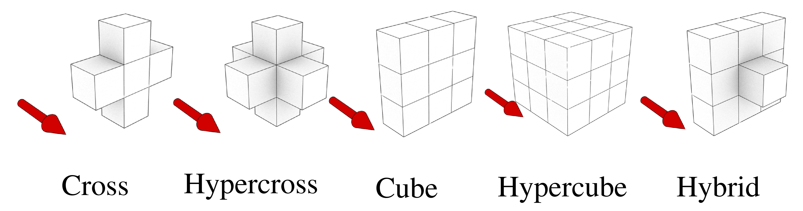
Minkowski Engine은 sparse convolution을 매번 brute-force neighbor search로 처리하지 않는다. coordinate manager가 coordinate set을 관리하고, kernel map은 offset별 input row와 output row의 연결을 저장한다. 같은 coordinate/kernel specification이 반복되면 이 mapping을 cache할 수 있다.
구현 관점에서 가장 중요한 흐름은 coordinate quantization → coordinate map → kernel map → gather/GEMM/scatter-add다.
| 단계 | 무엇을 담당하나 | 왜 필요한가 |
|---|---|---|
| Coordinate quantization | 연속 point를 discrete lattice coordinate로 변환 | point cloud를 sparse tensor로 만들기 위한 입력 정규화 |
| Coordinate manager | unique coordinate set과 coordinate stride 관리 | layer 간 coordinate reuse와 lookup 비용 절감 |
| Kernel map | offset별 input/output row index pair 저장 | 실제 존재하는 neighbor만 gather하고 scatter-add 수행 |
| Sparse operators | convolution, pooling, transposed convolution 실행 | dense CNN의 layer 문법을 sparse domain으로 옮김 |
MinkowskiNet은 ResNet 계열 구조를 sparse convolution으로 옮긴 모델이고, MinkowskiUNet은 semantic segmentation을 위한 encoder-decoder 구조다. 논문은 4D network의 output을 더 일관되게 만들기 위해 7D space-time-chroma space에서 TS-CRF도 사용한다.
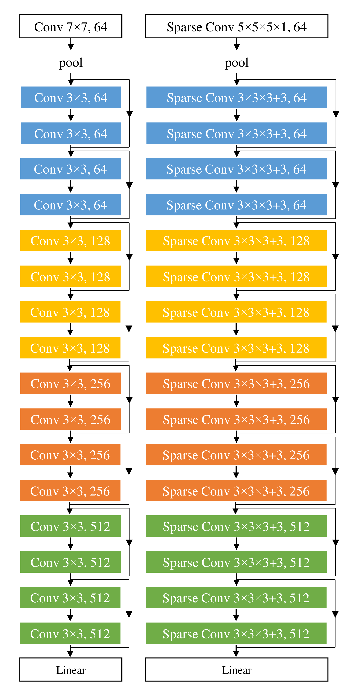
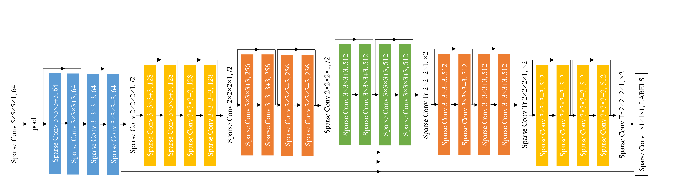
Implementation algorithm / TS-CRF
엔진 구현 알고리즘은 sparse tensor quantization, generalized sparse convolution, pooling, TS-CRF inference를 실제 GPU 연산으로 연결한다.
| Algorithm | 역할 | 핵심 동작 |
|---|---|---|
| Alg. 1 | GPU Sparse Tensor Quantization | coordinate를 hash key로 바꾸고 sort/unique/reduce로 collision과 label conflict 처리 |
| Alg. 2 | Generalized Sparse Convolution | offset별 kernel map을 따라 feature gather, matrix multiplication, output scatter-add 수행 |
| Alg. 3-4 | Max / Average Pooling | 같은 출력 coordinate로 모이는 input feature를 reduce하거나 sparse matrix 곱으로 평균화 |
| Alg. 5 | TS-CRF Variational Inference | 7D coordinate \([C,F,T]\) 위에서 sparse convolution과 softmax를 반복 |
TS-CRF는 7D space-time-chroma coordinate에서 pairwise message passing을 generalized sparse convolution으로 구현한다.
Evidence: 어떤 task에서 sparse 3D/4D CNN을 검증했나
실험은 “sparse CNN이 3D segmentation에서 강한가”, “4D convolution이 temporal context에 실제로 도움이 되는가”, “엔진이 충분히 효율적인가”를 나누어 검증한다. 핵심 평가는 dataset 이름보다 task 단위로 읽는 편이 흐름을 따라가기 쉽다.
각 실험은 generalized sparse convolution의 표현력, 4D temporal modeling, runtime 효율을 다른 각도에서 확인한다.
ScanNet, S3DIS, RueMonge에서 sparse CNN의 3D scene understanding 성능 확인.
Synthia 4D와 noisy Synthia에서 시간 축 convolution과 TS-CRF 효과 확인.
voxel size와 video length에 따른 3D/4D MinkNet runtime 비교.
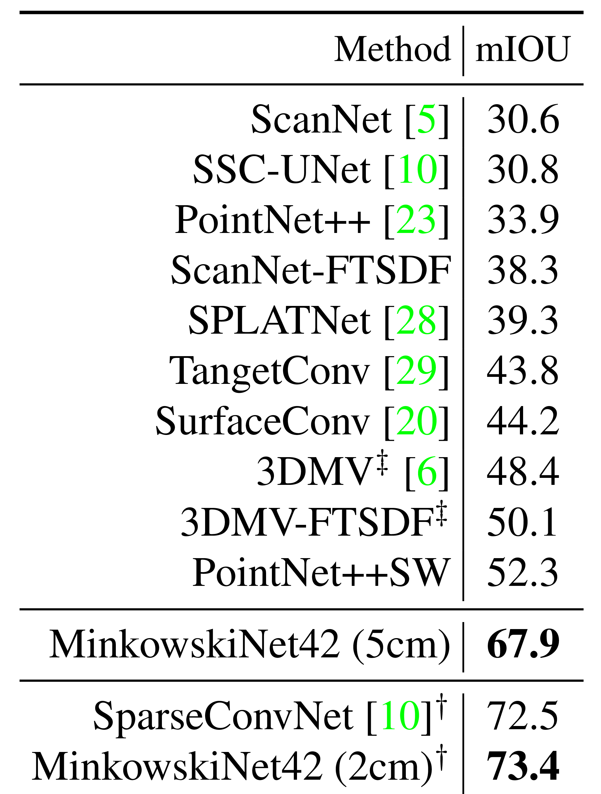
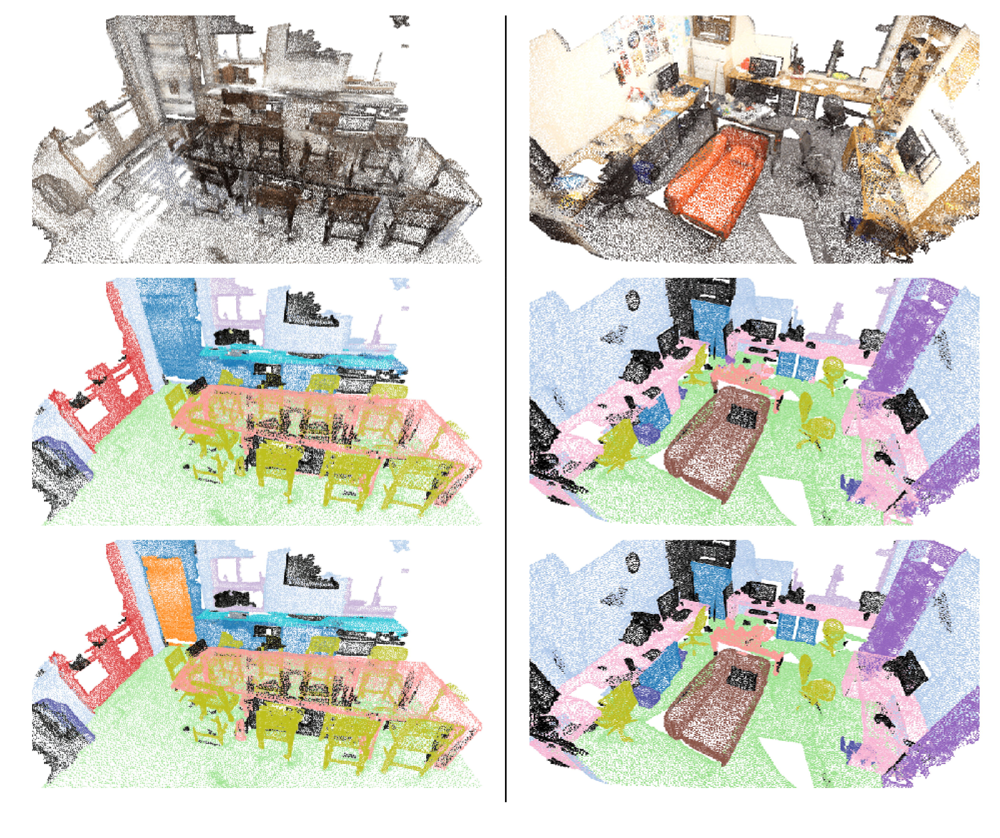
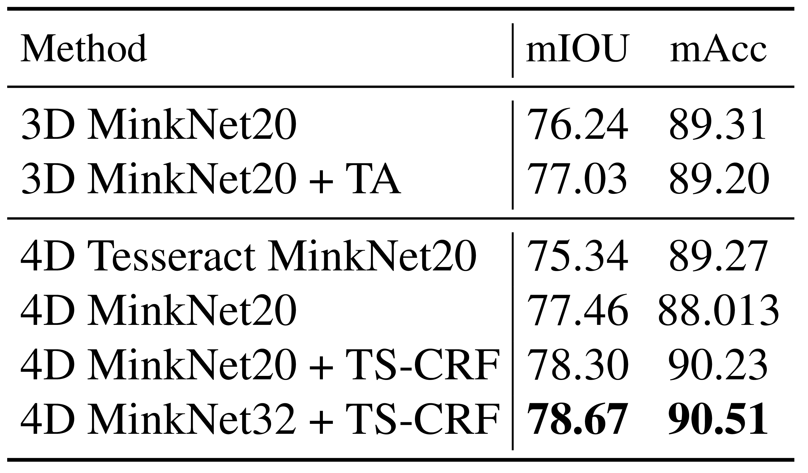
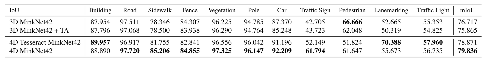
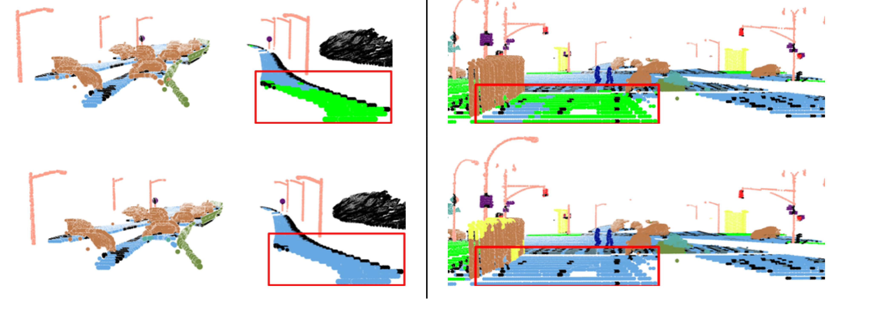
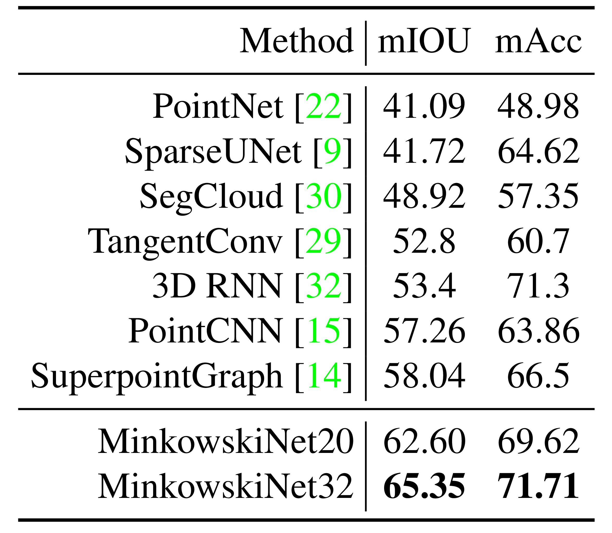
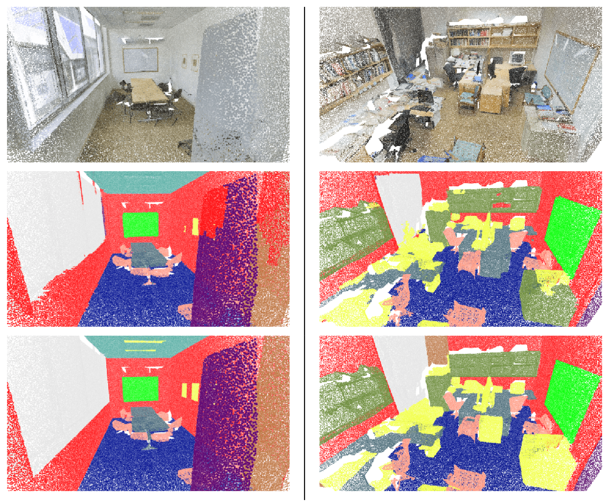
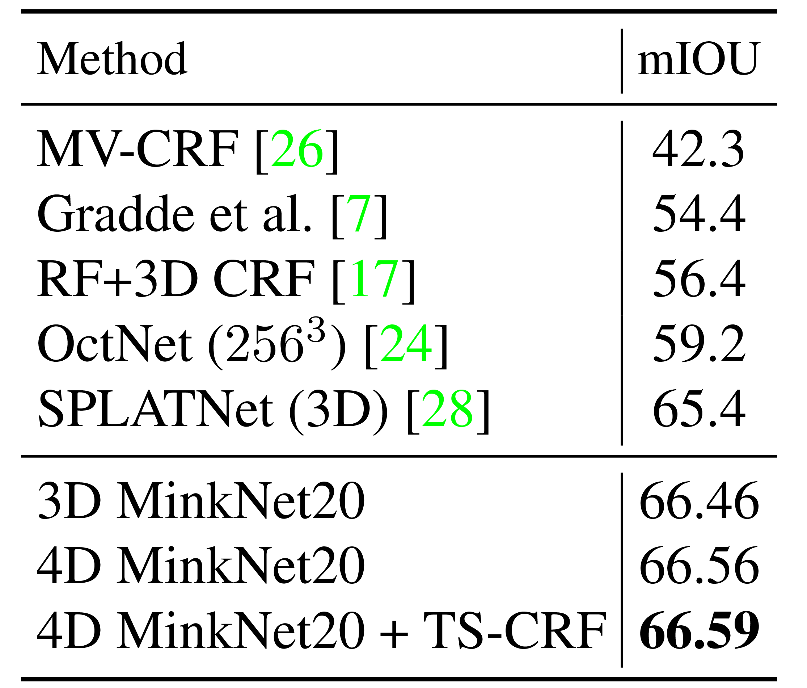
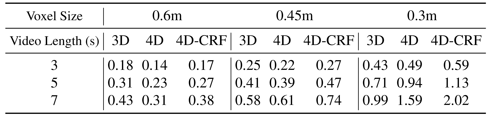
Usage / Limits: 언제 쓰기 좋은가
MinkowskiCNN은 point cloud나 voxelized reconstruction처럼 공간 대부분이 비어 있는 데이터에 적합하다. 특히 temporal point cloud sequence를 4D sparse tensor로 묶을 수 있을 때, frame-wise 3D network보다 시간 정보를 자연스럽게 통합할 수 있다.
이 방법은 sparse coordinate structure가 강할수록 장점이 뚜렷하다.
| 상황 | 판단 | 이유 |
|---|---|---|
| Good fit | LiDAR, RGB-D, reconstructed point cloud, 3D video segmentation | 빈 voxel이 많아 sparse coordinate 연산 이점이 큼 |
| Strong use case | temporal point cloud / 3D video | 4D convolution이 temporal context를 feature hierarchy 내부에서 처리 |
| Check carefully | quantization resolution 선택 | voxel size가 accuracy/runtime trade-off를 크게 좌우 |
| Limitation | 관측이 거의 dense하거나 coordinate가 계속 새로 생성되는 문제 | sparse map reuse와 empty-space saving의 이점이 줄어들 수 있음 |
Problem: how can 3D videos be processed without dense grids?
The paper starts from a simple observation: most 3D/4D perception data is sparse. LiDAR scans, depth-camera sequences, and RGB-D reconstructions occupy only a small subset of a full voxel grid, so dense 3D/4D convolution wastes computation on empty space.
The introduction argues that 4D perception is attractive, but dense processing is expensive and frame-wise 3D processing does not model temporal structure directly.
Only observed surfaces contain points; most cells are empty.
Kernel locations and volume size grow quickly with dimension.
Temporal consistency is not learned inside the network hierarchy.
Coordinates and features allow CNN layers to move into sparse domains.
Related Work context
Related work explains why the paper chooses sparse tensors and convolutional representation.
| Family | Strength | Limitation in this paper |
|---|---|---|
| Dense voxel CNN | Direct CNN on 3D grids | High memory and compute because most 3D cells are empty |
| Point networks | Avoid dense voxelization | CNN-style locality and hierarchy are less direct |
| Sparse convolution | Computes only at observed coordinates | This paper generalizes it to arbitrary dimension, kernel shape, and reusable maps |
| Early 4D perception | Handles spatio-temporal data | Deep homogeneous 4D convolutional networks were limited |
Mechanism: what does generalized sparse convolution change?
The method combines sparse tensor representation with a convolution definition whose input and output coordinate sets can differ. This is what lets dense convolution, sparse submanifold convolution, strided convolution, pooling, and transposed convolution share one coordinate-map view.
The paper stores coordinates and features together. In 4D video, coordinates include \((x,y,z,t)\), plus a batch index in implementation.
Eq. (2) is the dense reference. Eq. (3) relaxes it by summing only over offsets that exist in the input coordinate set and by allowing \(\mathcal{C}^{\mathrm{in}}\) and \(\mathcal{C}^{\mathrm{out}}\) to differ.
The generalization is mainly about coordinate-set freedom.
| Element | Role | Reading |
|---|---|---|
| \(\mathcal{C}^{\mathrm{in}}\) | Input coordinate set | Locations where features exist |
| \(\mathcal{C}^{\mathrm{out}}\) | Output coordinate set | Can change through stride, pooling, or transposed convolution |
| \(V^D(K)\) | Candidate kernel offsets in \(D\) dimensions | All offsets inside a \(K\)-sized hypercube |
| \(\mathcal{N}^D(\mathbf{u},\mathcal{C}^{\mathrm{in}})\) | Valid input-neighbor offsets | Keeps only offsets where \(\mathbf{u}+\mathbf{i}\in\mathcal{C}^{\mathrm{in}}\) |
| \(\mathbf{W}_{\mathbf{i}}\) | Learnable offset weights | Transforms neighbor features into output channels |
For 4D and higher dimensions, full hypercubic kernels become expensive. The paper therefore combines hypercubic and hyper-cross kernels.
The engine avoids brute-force neighbor search. A coordinate manager maintains sparse coordinate sets, and kernel maps store offset-wise input/output row pairs that can be reused.
The main implementation flow is quantization → coordinate map → kernel map → gather/GEMM/scatter-add.
| Step | Role | Why it matters |
|---|---|---|
| Coordinate quantization | Converts continuous points to discrete lattice coordinates | Creates sparse tensor input |
| Coordinate manager | Manages unique coordinate sets and strides | Enables reuse and fast lookup |
| Kernel map | Stores row pairs per offset | Computes only existing neighbors |
| Sparse operators | Runs convolution, pooling, and transposed convolution | Transfers CNN layer grammar to sparse domains |
MinkowskiNet transfers ResNet-style blocks to sparse convolution, and MinkowskiUNet builds an encoder-decoder for semantic segmentation. TS-CRF adds a 7D space-time-chroma refinement layer.
Implementation algorithms / TS-CRF
The implementation algorithms are support material for understanding the engine.
| Algorithm | Role | Main operation |
|---|---|---|
| Alg. 1 | GPU Sparse Tensor Quantization | Hash, sort, unique, and reduce coordinates/labels |
| Alg. 2 | Generalized Sparse Convolution | Gather, GEMM, and scatter-add through kernel maps |
| Alg. 3-4 | Max / Average Pooling | Reduce or average features that map to the same output coordinate |
| Alg. 5 | TS-CRF Variational Inference | Iterates sparse convolution and softmax on \([C,F,T]\) |
Evidence: which tasks validate sparse 3D/4D CNNs?
The experiments test three questions: whether sparse CNNs work for 3D segmentation, whether 4D convolution helps temporal data, and whether the system is efficient enough in practice.
Each evidence block corresponds to a claim about representation, temporal modeling, or runtime.
ScanNet, S3DIS, and RueMonge evaluate sparse 3D scene understanding.
Synthia 4D and noisy Synthia test temporal context and TS-CRF.
Runtime varies voxel size and video length for 3D/4D networks.
Usage / Limits: when is it useful?
MinkowskiCNN is well suited to sparse point clouds, voxelized reconstructions, and temporal point-cloud sequences. Its advantage is strongest when empty-space saving and coordinate-map reuse matter.
The method is most useful when sparse coordinate structure is strong.
| Situation | Judgment | Reason |
|---|---|---|
| Good fit | LiDAR, RGB-D, reconstructed point clouds, 3D video segmentation | Most voxels are empty |
| Strong use case | Temporal point-cloud / 3D video | 4D convolution handles time inside the feature hierarchy |
| Check carefully | Quantization resolution | Voxel size controls accuracy/runtime trade-off |
| Limitation | Nearly dense observations or constantly changing coordinates | Sparse-map reuse and empty-space savings become weaker |